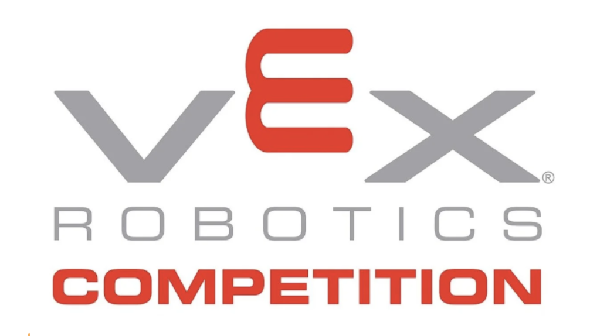

What Are The Potential Barriers to Robotics in High School?
July 15, 2026

I started my robotics journey in LEGO robotics in elementary school, then transitioned to VEX robotics in middle and high school, where I stuck around for more than four years. Over time, robotics became one of the most meaningful parts of my education, teaching me problem-solving, teamwork, and resilience.
But along the way, I also saw kids who are interested but feel intimidated or are unsure how to get started or join. There are also many kids who join robotics with excitement, only to leave after a season or two. Not because they lacked interest or ability, but because of real barriers that made participation difficult to sustain.
After talking with friends and classmates who were interested in robotics but never joined, others who joined with excitement but quit after a season or two, and those who stayed involved for years like I did, I started to see a pattern in the challenges students face in high school robotics.
1. Cost Can Be a Major Obstacle
Although robotics is often described as a school activity, the costs can add up quickly: team registration fees, robot parts, tools, laptops, software, and travel expenses such as hotels and meals for competitions. For some families, these costs make participation difficult or even impossible.
2. Heavy Time Commitment and Burnout
Robotics often requires multiple long meetings each week, weekend build sessions, and multiday competitions that involve travel and missed classes. Balancing robotics with schoolwork, sports, other extracurricular activities, and family responsibilities can quickly become overwhelming. Kids may enjoy robotics but leave simply because the schedule is unsustainable.
3. Teamwork Isn’t Always Easy
Collaboration is a core idea behind robotics teams, but it isn’t always easy for teenagers to put into practice. A typical robotics team includes many different roles, such as builder, coder, driver, and notebooker, and sometimes backup members so students can share responsibilities and learn from one another.
In reality, team dynamics can be challenging. Teams may struggle with unequal participation, unclear roles, strong personalities dominating discussions, or conflicts between team members like coder, builder or notebooker. When collaboration breaks down, kids can feel frustrated, unheard, or disengaged. And many quit simply because of this. A negative team experience can push students away from robotics, and from STEM more broadly.
4. Steep Learning Curve for New Members
When I first joined robotics, I was fortunate to have supportive mentors and coaches who helped guide me through the learning process, but many kids aren’t as lucky. Many kids join robotics with little or no prior experience and may feel intimidated by advanced technical discussions, worry about slowing the team down, or compare themselves to more experienced teammates. Without strong mentorship and clear onboarding, beginners can easily feel like they don’t belong.
5. Travel Challenges
Robotics competitions often involve longdistance travel, early mornings, and long days on site. To reduce missed school days, teams sometimes book very early morning or redeye flights, which can make trips especially exhausting. For some students, transportation challenges, school or family commitments, or the physical and mental demands of competition make participation difficult. In many cases, it is sad that logistics instead of interest or ability end up determining who gets to participate.
6. Changing Interests Over Time
Some kids realize that robotics isn’t what they expected. As many students point out, VEX competition themes can start to feel repetitive year after year, which can make their role on the team feel routine, especially for those who have been in VEX for many years.
For example, while each VEX game has its own rules and strategies, some longtime participants feel that the overall structure, cycling objects, controlling goals or zones, and balancing in the endgame, has become familiar over time.
VEX Tipping Point (2021–2022) focused on tipping and controlling mobile goals, placing rings on posts, and balancing platforms in the endgame, returning to ringsandposts mechanics that felt familiar to longtime teams.
VEX Spin Up (2022–2023) introduced disc shooting, roller control bonuses, and autonomousheavy scoring. While shooting was new for some teams, the underlying pattern of fast object cycling and field control remained.
VEX Over Under (2023–2024) emphasized moving and scoring triballs, clearing zones, and controlling barriers, strategically similar to earlier controlbased games.
VEX High Stakes (2024–2025) returned to rings on stakes, goal ownership, and endgame elevation, which many kids see as another variation of rings, posts, and balancing.
VEX Push Back (2025–2026) introduced new field elements, but for longtime participants, the core gameplay still centerd on fast object cycling, field control, and endgame strategy. Block cycling and area control remain fundamental, echoing past game themes, and the overall objective structure continues to follow a familiar pattern: collect → position → control → score.
As a result, some students find their interest fading and discover they are more drawn to creative, researchbased, or communityfocused STEM work.
Final Thoughts
Robotics have the power to inspire. I know this because it inspired me, but only when kids are able to fully participate. Over the years, I’ve seen how different barriers can quietly push talented and motivated students away, even when they care deeply about STEM. By listening to kid experiences and actively working to lower these obstacles, we can make high school robotics more inclusive, welcoming, and meaningful for everyone. No kid should miss out on STEM opportunities because of barriers they can’t control.
Based on what I’ve seen and experienced, here are a few ways robotics can become more accessible and sustainable:
Offer financial assistance and lowcost ways for students to get started
Provide strong mentorship and guidance for new members
Encourage healthy team culture and open, respectful communication
Create flexible roles and noncompetitive ways to participate
Expand robotics opportunities within local communities